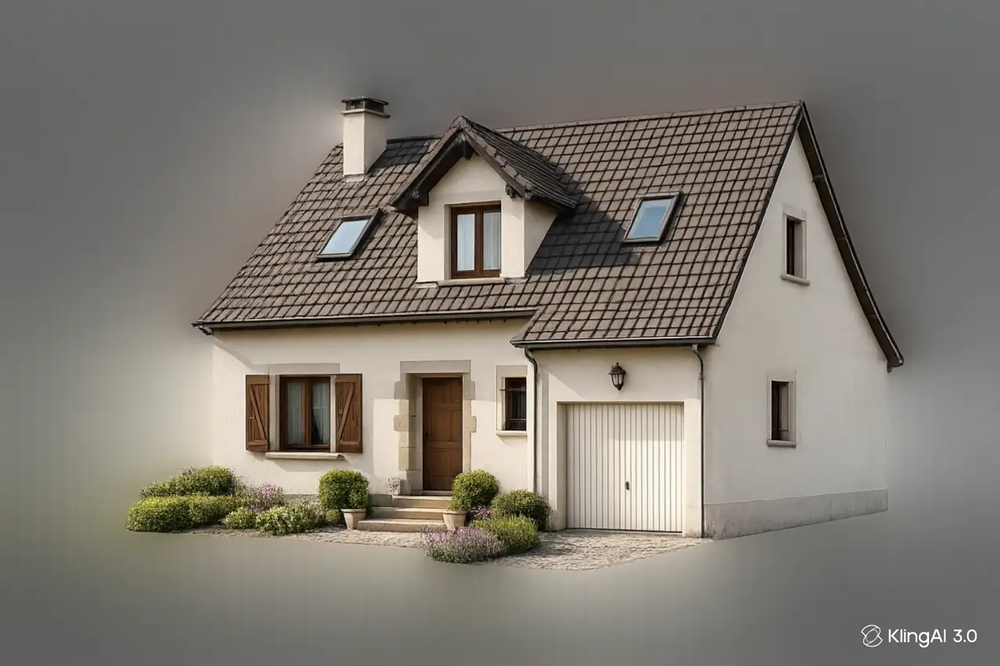
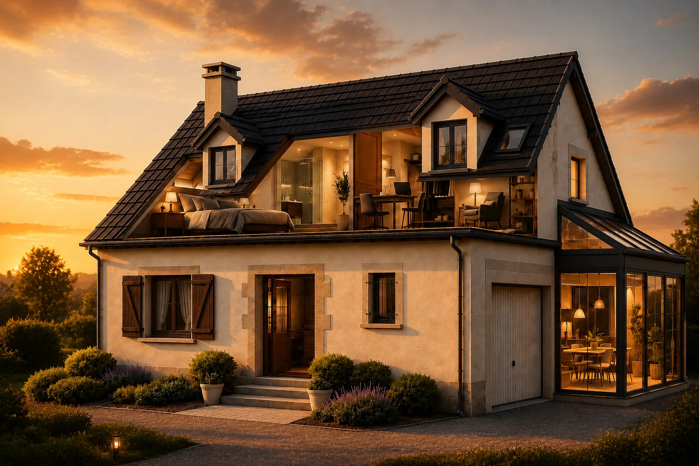
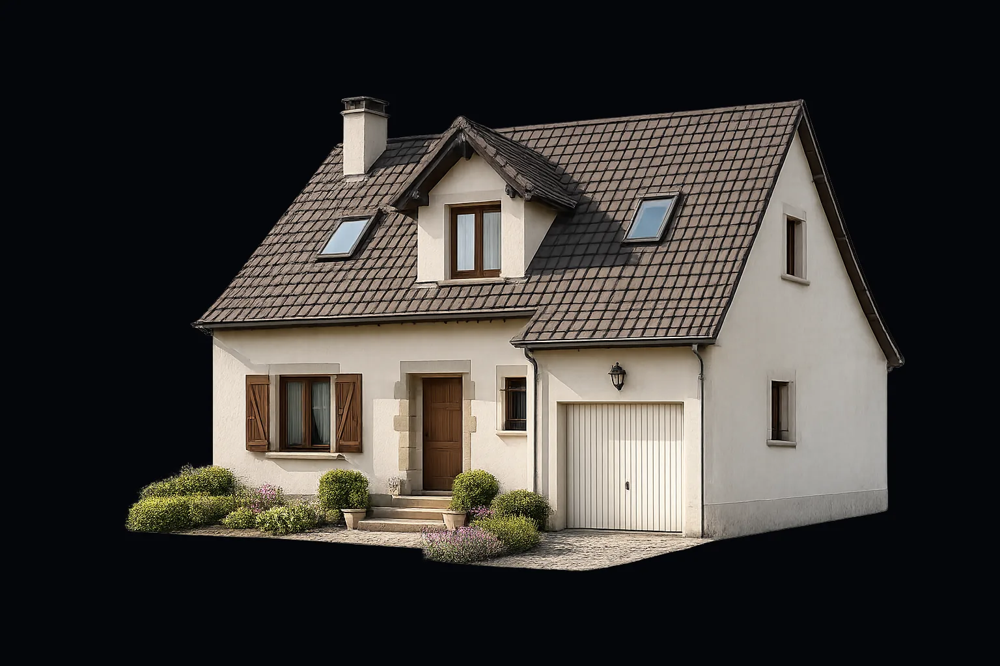

Vous pensez connaître
votre maison.
Nous voyons ce que
vous ne voyez pas.
Des mètres carrés
déjà présents.
Repousser les murs,
sans déménager.
Plus d'espace.
Plus de lumière.
Entrez chez vous.
Chaque pièce,
repensée.
Le quotidien,
sublimé.
Le potentiel révélé
La plupart des maisons ne sont pas à remplacer. Elles sont à révéler. Sous chaque toit dorment des mètres carrés, de la lumière et une autre façon de vivre — il suffit de savoir les faire apparaître.
Terrexo — Révélateur de potentiel · Luxembourg
Notre expertise
Terrexo ne réalise pas seulement des travaux.
Nous révélons le potentiel d'une maison.
- 01
Extensions de maisons
Ossature bois ou béton, parfaitement intégrées à l'existant.
- 02
Aménagement de combles
Des mètres carrés habitables révélés sous votre toit.
- 03
Création de lucarnes
Plus de lumière naturelle, plus de volume, plus de standing.
- 04
Rénovations complètes
Même structure, nouvelle expérience de vie — clé en main.
- 05
Transformation architecturale
Une maison traditionnelle devient une résidence d'exception.
Notre méthode
Une transformation maîtrisée,
du premier croquis aux clés.
- 01 — Étude
Étude & écoute
Nous visitons, mesurons et comprenons votre maison et vos envies. Étude de potentiel offerte.
- 02 — Conception
Conception
Plans, volumes, lumière : nous dessinons la transformation et son budget, sans surprise.
- 03 — Réalisation
Réalisation
Une seule équipe pilote le chantier — gros œuvre, combles, lucarnes, finitions.
- 04 — Livraison
Livraison
Vous récupérez une maison transformée, propre et prête à vivre. Clé en main.
Pourquoi Terrexo
Un seul interlocuteur,
du potentiel à la livraison.
La transformation
D'une maison traditionnelle
à une résidence d'exception.


Glissez le curseur pour comparer · illustration de transformation
Questions fréquentes
Tout savoir avant
de transformer votre maison.
Faut-il une autorisation pour une extension ou des combles ?
Dans la plupart des communes luxembourgeoises, oui. Nous réalisons l'étude de faisabilité et vous accompagnons dans les démarches d'autorisation de bâtir.
Combien de temps dure un chantier ?
Selon l'ampleur : quelques semaines pour un aménagement de combles, quelques mois pour une extension ou une rénovation complète. Le planning vous est remis avant le démarrage.
L'étude est-elle vraiment gratuite ?
Oui. Nous étudions le potentiel de votre maison et vous remettons une première vision et une estimation, sans engagement.
Puis-je rester habiter pendant les travaux ?
Souvent oui, en particulier pour les combles et les extensions. Nous organisons le chantier pour limiter la gêne au quotidien.
Intervenez-vous dans tout le Luxembourg ?
Oui. Depuis notre atelier de Beggen, nous intervenons sur l'ensemble du Grand-Duché.
Étude gratuite
Vous n'avez peut-être pas besoin de déménager.
Simplement de transformer votre maison.
Parlons de votre projet. Nous étudions le potentiel de votre maison et vous remettons une vision claire, sans engagement.